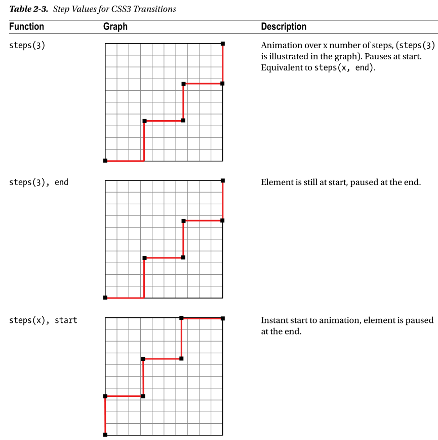

Thank
The step functions allow you to divide the transition over equidistant steps. The func‐
tions define the number and direction of steps. There are two direction options:
start and end . With start , the first step happens at the animation start. With end ,
the last step happens at the animation end. For example, steps(5, end) would jump
through the equidistant steps at 0%, 20%, 40%, 60%, and 80%; and steps(5, start)
would jump through the equidistant steps at 20%, 40%, 60%, 80%, and 100%.
